Accélérateur de particules
Construction avancée
L'accélérateur est l'une des constructions les plus complexes du mod. Il produit de l'Antimatière et de la Matière noire, nécessaires pour les machines de fin de partie. Les particules en mouvement émettent des radiations.
Principe — Résultat d'une collision
Deux particules entrent en collision. Le résultat dépend de leur vitesse combinée selon la formule :
résultat = ((v1 + v2) / 4) ²| Résultat | Condition | Garantie |
|---|---|---|
| Matière noire | résultat > 0,999 (les deux particules à ≥ 99,99 % de C) | 100 % |
| Antimatière | résultat < 0,999 (les deux particules à ≥ 50 % de C) | Variable — augmente avec la vitesse |
| Rien | Une particule à moins de 50 % de C | — |
Composants requis
| Composant | Rôle |
|---|---|
| Injecteur de particules | Crée les particules depuis n'importe quel item/bloc. 20 MJ à 960 V par particule (40 MJ par collision). |
| Cellule électromagnétique | Capture le résultat de la collision. À placer dans l'injecteur. |
| Booster électromagnétique | Accélère les particules. +0,33 %/tick en ligne droite, −0,17 %/tick en virage. |
| Électroaimant | Forme l'anneau de collision. Peut être remplacé par du verre électromagnétique. |
| Interrupteur électromagnétique | Inverse la direction d'une particule sur deux — indispensable pour les collisions. |
Méthode 1 — Ligne droite
La méthode la plus simple : une longue ligne de boosters pour atteindre la vitesse voulue. Il faut 200 boosters en ligne droite pour atteindre 100 % de C. Encombrant mais efficace.
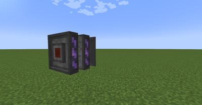
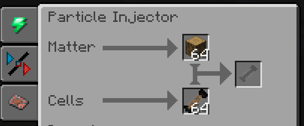
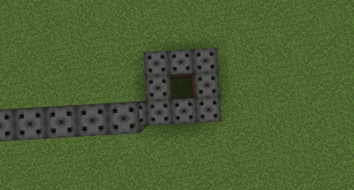
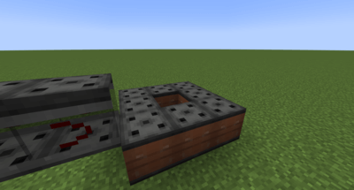
Minimiser les virages
Chaque virage coûte −0,17 %/tick de vitesse. Gardez les lignes droites aussi longues que possible et limitez les coins au strict minimum.
Anneau de collision (minimum 3×3)
Les particules expirent après 1 000 ticks. L'anneau doit donc être aussi petit que possible. Un anneau 3×3 d'électroaimants suffit.
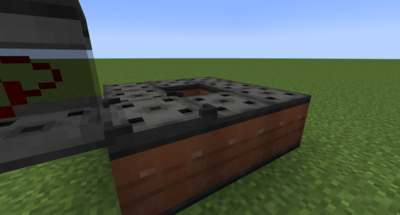
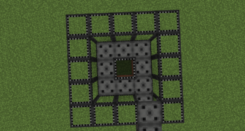
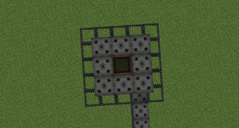
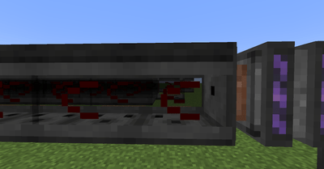
Méthode 2 — Cyclotron (compact)
Plus complexe mais économe en espace. Nécessite en plus :
- Passerelle électromagnétique — laisse passer les particules au-dessus d'un seuil de vitesse programmable
- Diode électromagnétique — force le sens de circulation (la flèche doit pointer dans le sens de déplacement)
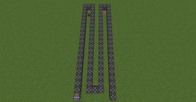
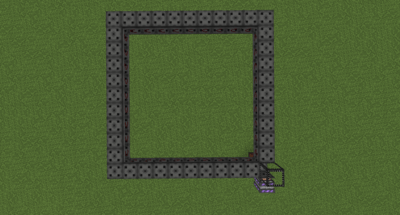
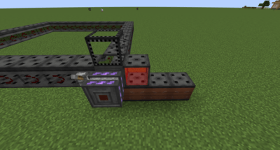
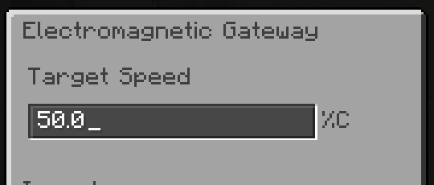
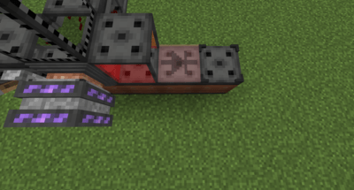
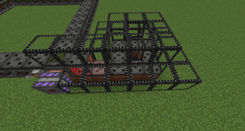
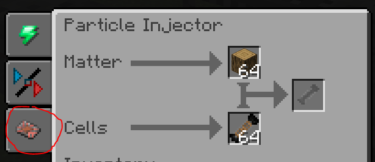
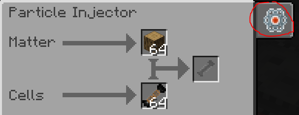
Choisir la méthode dans l'injecteur
L'injecteur doit être configuré pour la méthode utilisée via l'onglet dans son interface. Vous pouvez aussi y voir la vitesse des deux particules en survolant l'onglet Vitesse.